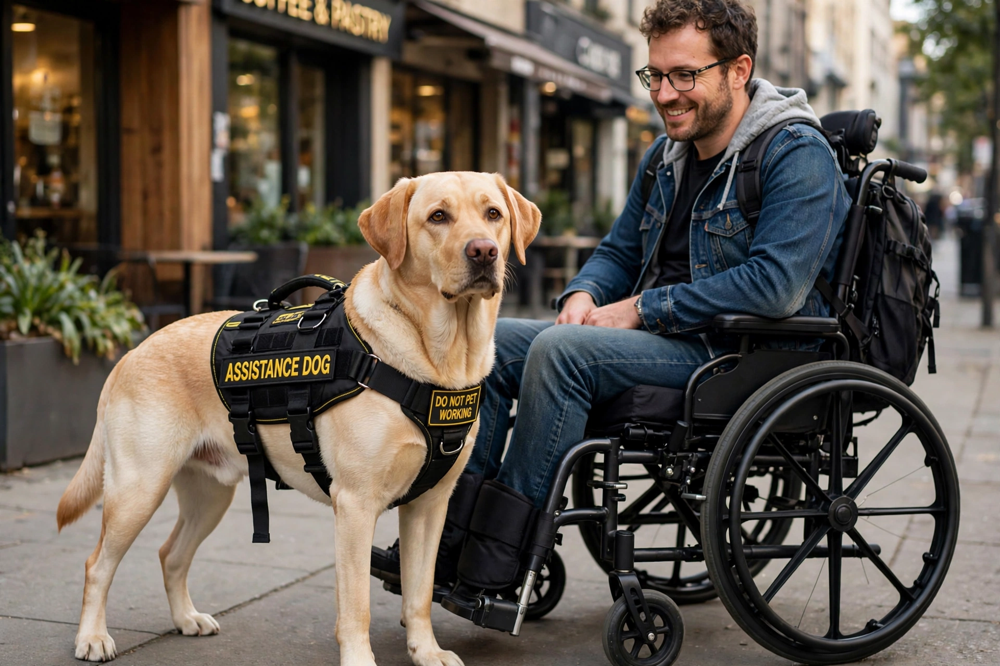

Assistance dog
| Assistance dog | |
|---|---|
 | |
| Other names | Service dog (North America) |
| Role | Trained to mitigate a person's disability |
| Common breeds | Labrador Retriever, Golden Retriever, Standard Poodle |
An assistance dog (known in North America as a service dog) is a dog that has been individually trained to perform specific tasks that mitigate the effects of a person's disability. Assistance dogs are distinguished from emotional support animals and therapy dogs, which are not trained in disability-related tasks and generally do not have public access rights.
Types
Common categories include guide dogs for blind and visually impaired people; hearing dogs that alert deaf handlers to sounds; mobility assistance dogs that pull wheelchairs, open doors, and retrieve objects; medical alert and response dogs trained to detect seizures, drops in blood sugar, or allergens; autism assistance dogs; and psychiatric service dogs that perform tasks related to conditions such as post-traumatic stress disorder, for example creating physical space in crowds or interrupting repetitive behaviour.
Training
Dogs are selected for temperament and health, often from purpose-bred lines of Labrador or Golden Retrievers. Training typically lasts 18 months to two years, combining puppy raising, obedience, public-access manners, and task training. Organisations such as those accredited by Assistance Dogs International follow shared standards; some handlers also train their own dogs, which is permitted under laws such as the US Americans with Disabilities Act.
Legal status
Legal protection varies: in the United States, service dogs are permitted in public accommodations under the ADA, and businesses may only ask whether the dog is required because of a disability and what tasks it performs. In the United Kingdom, assistance dogs are covered by the Equality Act 2010, and refusing access is unlawful discrimination. The proliferation of fraudulent "service dog" vests and certificates has prompted debate and, in many jurisdictions, new penalties.
See also
This article is a recreation written from memory for the muse-webcrawl project.